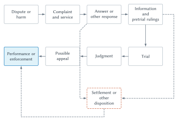

One Event, More Than One Legal Process
Imagine that a driver approaches an intersection too quickly, ignores a red light, and strikes a cyclist. The cyclist suffers a serious injury. The event takes only a few seconds, but it can activate several different parts of the legal system.
The injured cyclist may bring a civil lawsuit seeking compensation. A prosecutor may decide that the driver’s conduct satisfies the elements of a crime. A motor-vehicle agency may review the driver’s license. An insurer may investigate coverage under a private contract. A court may need to decide disputed facts, interpret a statute, apply earlier judicial decisions, and select an appropriate remedy. If the dispute produces an appeal, the appellate court’s explanation may influence future cases involving other drivers and cyclists.
These processes are related, but they are not the same. The cyclist does not prosecute the crime. The prosecutor does not ordinarily collect the cyclist’s damages. An insurance company cannot imprison the driver. A trial court does not simply write any rule it thinks desirable. Each institution has a source of authority, a defined task, a procedure, and limits.
This is why a legal rule cannot be understood apart from the institutions that make, interpret, apply, and enforce it. Saying that the cyclist has a right to compensation is only the beginning. Someone must identify the governing law, establish the relevant facts, determine which court has authority, decide whether the driver is legally responsible, calculate a remedy, and enforce the result. Every stage uses information, consumes resources, and can produce error.
Chapter 1 described law as a coordination technology. Chapter 2 showed how rules change choices at the margin. This chapter supplies the legal map that connects those ideas to actual legal institutions. Its purpose is not to teach civil procedure or constitutional law. It is to make later economic analysis intelligible by explaining where legal rules come from, what courts do, how civil and criminal processes differ, and why precedent matters.
Law Comes From Institutions
People often speak of “the law” as if it were a single set of commands stored in one book. The American legal system is more complicated. Legal rules come from several institutions, operate at different levels of government, and interact through interpretation and enforcement.
A constitution creates institutions, assigns powers, and limits what government may do. The United States has a federal Constitution, and each state has its own constitution. A statute is a law enacted by a legislature. Congress enacts federal statutes; state legislatures enact state statutes; local legislative bodies enact ordinances within the authority given to them. A regulation is a rule issued by an administrative agency under legal authority delegated to it. A judicial decision resolves a dispute and explains how governing law applies. In common-law fields, judicial decisions may also articulate or revise rules that are not drawn directly from a statute.
Private organizations make rules too. An insurer defines coverage in a policy. A university adopts a conduct code. A sports league specifies eligibility and discipline. A platform establishes participation rules and account sanctions. These rules can strongly influence behavior, but they are not simply another layer of public law. Their authority usually comes from contract, ownership, membership, or control of access to a privately organized system. Public law determines some of the boundaries within which private rules operate.
| Source | Institution | What it does | How it changes | Chapter example |
|---|---|---|---|---|
| Constitution | The people through constitutional adoption and amendment | Creates government powers, structures institutions, and protects rights | Formal amendment and judicial interpretation | Limits government action and establishes judicial authority |
| Statute | Legislature | Enacts general legal duties, rights, offenses, and programs | Later legislation, repeal, or judicial review | A traffic law defines prohibited driving conduct |
| Regulation | Administrative agency acting under delegated authority | Supplies detailed rules for administering a statutory program | Agency rulemaking, legislation, and judicial review | A motor-vehicle agency specifies licensing or inspection requirements |
| Judicial decision or common-law rule | Court resolving a case | Interprets law, applies it to facts, and sometimes develops judge-made rules | Later interpretation, distinguishing, overruling, or legislation | A court explains reasonable care in an accident case |
| Private rule | Firm, platform, association, university, or contracting parties | Governs participation, access, performance, or internal disputes | Contract change, organizational process, bargaining, exit, or public-law constraint | An insurer applies policy terms to the collision |
Table 3.1. Sources and institutions. Legal rules differ in where their authority comes from, who applies them, how broadly they operate, and how they can be changed.
The table is a map, not a complete hierarchy. A valid federal statute may displace conflicting state law, but many ordinary legal questions remain matters of state law. A regulation must remain within the authority delegated to the agency. A court may conclude that a statute or regulation conflicts with a constitution. Judicial interpretation can determine what broad statutory language means in a concrete case. The details can become technical, but the basic economic point is simple: legal authority is divided among institutions, and those divisions affect information, incentives, delay, and error.
Substance and Procedure
Law also can be divided by function. Substantive law defines legal rights, duties, offenses, and remedies. A rule requiring drivers to use reasonable care is substantive. So is a statute defining reckless driving or a contract promising insurance coverage.
Procedural law governs how legal claims are asserted and decided. It addresses such questions as where a claim may be filed, how the opposing party receives notice, what information must be exchanged, which evidence may be considered, how a trial is conducted, and when an appeal is available.
The distinction is useful but not airtight. Procedure can change the practical value of substantive rights. A cyclist may possess a strong claim under substantive law, yet be unable to enforce it if filing is too costly, evidence is inaccessible, delay is extreme, or the defendant’s assets cannot be reached. A short filing deadline, a demanding proof rule, or an expensive discovery process can change which claims are worth bringing. Chapter 9 will analyze those incentive effects. For now, the important point is that substance tells us what the right is, while procedure helps determine what the right is worth in practice.
Traditional legal categories provide another map. Property law concerns rights over resources. Tort law concerns legally recognized civil wrongs, including many accidental injuries. Contract law concerns enforceable agreements. These categories organize much of private law, but real disputes cross their boundaries. A collision may involve tort duties, an insurance contract, ownership of a damaged bicycle, a traffic statute, and procedural rules. Legal categories are tools for organizing problems, not perfectly sealed boxes.
The Common-Law Tradition
The United States is usually described as a common-law country. That statement can be confusing because American law contains constitutions, enormous statutory codes, and extensive administrative regulation. Common law does not mean law without legislation. It refers to a legal tradition in which judicial decisions and precedent play a particularly important role, and more narrowly to bodies of law developed by courts rather than enacted in statutes.
The tradition emerged from English institutions over centuries. Beginning in the medieval period, royal courts based at Westminster and judges traveling through regional circuits decided disputes that previously might have been governed by varying local practices. Their decisions helped produce rules that were increasingly common across the realm. Litigants often needed a writ, an official document authorizing or initiating a proceeding in a royal court. The available writs influenced which claims courts could hear and how a legal complaint had to be framed.
Rules did not appear all at once in a comprehensive code. They accumulated through decided cases, professional practice, recorded pleadings, and judicial reasoning. Earlier decisions became useful guides for deciding later disputes. The modern doctrine of precedent developed gradually from this institutional history rather than arriving fully formed at the beginning.
Common-law courts also had limits. Their procedures could be rigid, and their available remedies were often narrow. A successful plaintiff might receive money damages even when money was not an adequate solution. People seeking a different form of relief petitioned the Crown, and responsibility for many such claims eventually moved to the Lord Chancellor and the Court of Chancery. Chancery administered equity, a parallel body of principles and remedies that included injunctions and orders of specific performance.
An injunction directs a party to do something or stop doing something. Specific performance orders a party to carry out a contractual obligation when money damages are inadequate. These equitable remedies remain important even though law and equity are no longer administered through entirely separate English courts. The Judicature Act 1873 merged the administration of common law and equity in England and Wales. American jurisdictions also combined them in varying ways, while preserving distinctions that still matter for remedies, procedure, and legal reasoning.
Reception in North America was selective. Colonial and later state institutions adopted, modified, or rejected English rules through legislation and court decisions. Local conditions and other legal traditions mattered. Louisiana, for example, retains a mixed tradition with strong civil-law influence. It is therefore more accurate to say that American jurisdictions adapted the English common-law tradition than to say that they simply copied English law.
Common Law and Civil Law
The other major Western legal tradition is called the civil-law tradition. It is associated with comprehensive codes and with legal reasoning that begins more explicitly from enacted text and scholarly organization. France’s Napoleonic Code is a famous example. Civil-law systems rely on judges, and judges necessarily interpret legal texts. Common-law systems rely heavily on statutes and codes. The contrast is one of institutional emphasis and legal method, not a claim that one tradition has judges while the other has only legislators.
The distinction has also narrowed in practice. American commercial law makes extensive use of enacted codes. Civil-law courts develop stable interpretations across cases. Modern legal systems borrow institutions from one another, and each country’s history produces its own combination.
For this book, the common-law tradition matters because property, tort, and contract rules have often developed through judicial decisions. It also creates a central economic question: can case-by-case adjudication generate rules that tend to reduce social costs? That question is important, but it should not be answered by definition. Chapter 10 will examine arguments for and against the common-law efficiency hypothesis.
Common Law and Legislation
Common law and legislation are different institutional processes for producing legal rules. The common-law process ordinarily begins with a concrete dispute. The parties present facts and legal arguments, and a court decides the case. The court’s explanation may then guide later courts. Change tends to be tied to the disputes that litigants bring and to occur through interpretation, distinction, extension, or overruling.
Legislation need not wait for a suitable lawsuit. A legislature can investigate a broad problem, hold hearings, negotiate among competing interests, and enact a rule for an entire category of future conduct. It can replace an existing common-law rule, create a regulatory program, authorize an agency, or establish a remedy that courts had not recognized.
Consider the driving incident. A common-law negligence rule may require drivers to exercise reasonable care under the circumstances. A traffic statute may specify that a driver must stop at a red light or may define an offense involving reckless conduct. A statute may also authorize an agency to administer driver licensing, after which the agency issues detailed regulations. If a lawsuit arises, a court may need to interpret the statute, determine whether the regulation applies, and decide how either one interacts with common-law duties.
No institution simply presses a button marked “make good law.” Courts see concrete disputes in detail but depend on the cases and arguments that reach them. Legislatures can act broadly but must generalize across situations they cannot fully observe. Agencies may develop expertise yet face limited information, implementation problems, and political incentives. Courts interpreting statutes can correct ambiguity but also create new uncertainty.
| Feature | Common-law process | Legislative process |
|---|---|---|
| Trigger for action | A concrete dispute brought by litigants | A proposal placed on a legislative agenda |
| Primary decision maker | Judge or appellate court | Elected legislative body |
| Information presented | Case record, legal arguments, prior decisions, and facts about the dispute | Hearings, staff work, constituent information, lobbying, expertise, and political bargaining |
| Immediate scope | Resolves the case and may state a rule for later cases | Can establish broad rules prospectively without waiting for litigation |
| Method of revision | Following, distinguishing, limiting, or overruling precedent | Amendment, repeal, replacement, or delegated implementation |
| Interpretation | Later courts determine the reach of the decision | Courts and agencies interpret enacted language |
| Characteristic strength | Detailed attention to concrete facts and incremental learning | Capacity for coordinated, broad, and relatively rapid change |
| Characteristic limit | Depends on selected disputes, litigants, records, and hierarchy | Must generalize under limited information and political constraint |
Table 3.2. Common law and legislation. The two processes gather different information and change rules through different institutional mechanisms. Neither process is automatically efficient, precise, or superior.
Statutes generally displace conflicting common-law rules within their valid scope. Yet legislation does not eliminate judicial interpretation. Terms such as “reasonable,” “vehicle,” “employee,” or “substantial risk” must be applied to situations the legislature may not have anticipated. New technologies make this especially visible. A statute written with human drivers in mind may later be applied to automated vehicles. A copyright law written before generative AI may need to govern new methods of producing and imitating expression. Enacted text supplies authority, but institutions still must decide what the text means in new circumstances.
This comparison foreshadows a recurring theme. Legal institutions are ways of gathering information, assigning decision rights, and correcting mistakes. The relevant economic question is not whether judges or legislators are perfect. It is which institution is better positioned to address a particular problem, given the information available, the likely incentives, the cost of decision making, and the consequences of error.
Courts, Jurisdiction, and Federalism
A court cannot decide every dispute. Jurisdiction is a court’s legal authority to hear and decide a matter. Jurisdiction may depend on the subject of the dispute, the parties, the location of relevant events, the amount or remedy involved, and the place of the court within a judicial system. The technical rules can become complicated. At this stage, students need the underlying idea: before asking who should win, a legal system must determine which institution has authority to decide.
The United States has separate federal and state court systems. Federal courts have authority over categories of cases assigned by the Constitution and federal law. State courts possess broad authority under state constitutions and statutes. Most ordinary tort, contract, family, probate, and criminal matters are handled in state courts. A lawsuit arising from the cyclist’s injury would ordinarily involve state tort law, although particular facts could create federal issues.
Other fields are more strongly federal. Patent and copyright law, for example, arise under federal statutes. That does not mean that every dispute involving a copyrighted work belongs only to federal law; a licensing disagreement may also involve state contract questions. As Friedman’s legal map suggests, real cases often cross categories and levels of government.
Federalism affects incentives because forum can affect procedure, precedent, cost, speed, available remedies, and perceived advantages. Parties may disagree about where a case belongs. Lawyers may prefer a forum whose rules or prior decisions appear more favorable. Later chapters will examine strategic litigation choices. Here the important point is that the choice of forum is itself an institutional question, not a clerical detail.
Trial and Appellate Courts
Court systems are hierarchical. The names vary, especially among the states, but three functions recur: trial, intermediate appellate review, and final appellate review.
| Court level | Main task | Typical input | Typical output | Role in precedent |
|---|---|---|---|---|
| Trial court | Develop facts, apply law, and resolve the initial case | Testimony, documents, physical evidence, motions, and legal arguments | Verdict, findings, orders, and judgment | Applies precedent; some opinions may guide later courts |
| Intermediate appellate court | Review claimed legal or procedural error | Trial record, written briefs, and sometimes oral argument | Opinion affirming, reversing, modifying, or returning the case for more proceedings | Published majority opinions often bind lower courts within the system |
| Court of last resort | Provide final review allowed within the system and resolve important legal questions | Appellate record, briefs, and selected legal questions | Final opinion or order within that system | Its holdings generally carry the greatest precedential authority in that system |
Table 3.3. Court levels. Trial courts primarily develop the factual record and apply law. Appellate courts generally review claimed errors using that record rather than conducting a new trial.
At trial, the parties present evidence and legal arguments. In a jury trial, the judge ordinarily instructs the jury on the law while the jury determines disputed facts and applies the instructions. In a bench trial, the judge performs both roles. The boundary between law and fact is not always simple, but it helps explain why trial records matter.
An appellate court ordinarily does not invite the parties to start over with new witnesses. It reviews the existing record and the legal arguments about alleged error. It may affirm the lower court, leaving the decision in place. It may reverse or modify the decision. It may remand the case, sending it back for additional proceedings under the appellate court’s legal ruling.
An appeal is possible in many settings, but it is not automatic at every level. A losing party in a federal trial court normally can appeal to a federal court of appeals. Review by the United States Supreme Court is usually discretionary. State systems vary, and not every state uses the same labels or number of levels.
Hierarchy serves several functions. Appeals can correct errors in individual cases. Appellate opinions can also make law more consistent by giving lower courts and future parties a common interpretation. But review takes time and resources, and higher courts can err too. A hierarchy manages disagreement; it does not eliminate it.
Courts also depend on other institutions. A court can enter a judgment, but judges do not personally seize assets, supervise prisons, or operate licensing systems. Executive officials and legally authorized enforcement processes carry decisions into effect. This division of labor is another reason a formal ruling and an actual outcome can differ.
Civil and Criminal Cases
Return to the injured cyclist. The same event may produce both a civil proceeding and a criminal proceeding, but the two processes have different parties and purposes.
In a civil case, the injured person may act as the plaintiff and sue the driver as the defendant. The plaintiff might seek damages for medical expenses, lost income, pain, property damage, and other legally recognized losses. A court may also issue an injunction or declaratory relief in appropriate civil cases, although damages are the natural remedy in the collision example.
In a criminal case, government brings the prosecution. The injured cyclist is an important witness and victim but is not the prosecutor. If the driver is convicted, sanctions may include a fine paid to government, probation, loss of liberty, or other punishment authorized by law. Restitution may sometimes direct payment to a victim, but that does not turn the criminal prosecution into the victim’s private lawsuit.
| Feature | Civil proceeding | Criminal proceeding |
|---|---|---|
| Who initiates | Usually an injured person, firm, or other plaintiff | Government through a prosecutor |
| Interest asserted | A private claim for relief under civil law | A public charge that the defendant violated criminal law |
| Parties | Plaintiff and defendant | Government and defendant |
| Typical consequence | Damages, injunction, declaration, or another civil remedy | Fine, probation, incarceration, or another criminal sanction |
| General proof standard | Usually preponderance of the evidence; higher standards apply to some claims | Beyond a reasonable doubt for criminal guilt |
| Who receives money | Damages generally go to the successful plaintiff | Fines generally go to government; restitution may go to a victim |
| Relationship to the collision | The cyclist may seek compensation | Government may prosecute qualifying conduct |
Table 3.4. Civil and criminal proceedings. One harmful act can create separate civil and criminal matters. Neither proceeding is simply a duplicate of the other.
Not every injury is a crime, and not every crime produces a successful civil claim. Prosecutors exercise legal judgment about charges, and civil plaintiffs decide whether bringing a claim is worthwhile. The elements of liability, available defenses, and governing proof standards differ. An acquittal does not necessarily resolve every possible civil question, and a criminal charge does not automatically establish civil liability.
The collision may also produce administrative and private consequences. A licensing agency may act under its own authority. An insurer may apply policy terms. An employer or platform may impose a private rule. These overlapping processes remind us that conduct can be governed by several institutions at once.
Standards of Proof
A standard of proof tells a decision maker how strong the evidence must be before ruling for one side. It allocates the risk of error. A demanding standard makes some findings harder to establish. That can reduce one kind of mistake while increasing another.
| Standard | Plain-English orientation | Common setting | Error-risk implication |
|---|---|---|---|
| Preponderance of the evidence | The claim is more likely true than not true | Most civil claims | Divides the risk of factual error relatively evenly between the parties |
| Clear and convincing evidence | Evidence produces a firmer level of confidence than ordinary preponderance | Some civil claims involving especially important interests or allegations | Places more of the risk of nonpersuasion on the party carrying the burden |
| Beyond a reasonable doubt | The evidence leaves no reasonable doubt about criminal guilt | Criminal conviction | Strongly protects against wrongful conviction while making some guilty verdicts harder to obtain |
Table 3.5. Standards of proof. The standards are ordered by how demanding they are, but they should not be converted into artificial numerical probabilities.
In an ordinary civil claim, preponderance asks whether the plaintiff’s account is more likely than not. Some civil matters use clear and convincing evidence, a more demanding standard. Criminal guilt requires proof beyond a reasonable doubt. The exact verbal formulation can vary, but the ordering is central.
Why not use the same standard everywhere? Errors have different consequences. A mistaken civil judgment may place a loss on the wrong private party. A mistaken criminal conviction can impose imprisonment, stigma, and public condemnation on an innocent person. The high criminal standard reflects special concern about that error.
The choice still involves a tradeoff. Making conviction harder can reduce wrongful convictions but can also increase acquittals of people who committed the offense. A lower civil standard makes valid claims easier to establish but also makes mistaken liability more likely. Chapter 9 will analyze proof standards through error costs and procedural design. Chapter 11 will return to their effects on criminal enforcement and deterrence.
How a Civil Dispute Moves
The cyclist’s civil claim does not jump directly from injury to compensation. It must move through a legal process. Figure 3.1 presents a simplified map. Procedures vary by jurisdiction and case type, and many cases end before trial. The figure shows recurring functions rather than a mandatory sequence.

Figure 3.1. A simplified civil-dispute pathway. A civil dispute can move through filing, response, information exchange, settlement or trial, judgment, possible appeal, and enforcement. Cases can end at several points, and not every case uses every stage.
Complaint, Notice, and Response
A civil action begins when a plaintiff files a complaint. The complaint identifies the alleged wrong, explains the requested relief, and states why the court has authority to hear the dispute. Filing alone is not enough. The defendant ordinarily must receive legally sufficient notice through service of the complaint and related documents.
Notice is economically and legally important. A system could reduce filing costs by entering judgments without informing defendants, but it would create obvious opportunities for error and abuse. Requiring notice gives the defendant a chance to respond, while service rules create administrative cost and delay. Procedure repeatedly balances participation, accuracy, speed, and expense.
The defendant may file an answer, admitting some allegations, denying others, and raising defenses. Other responses may argue that the complaint is legally insufficient or that the court lacks authority. A case can end at this stage through dismissal, default, agreement, or another procedural ruling. The flowchart should not be read as a conveyor belt that forces every dispute to trial.
Information and Pretrial Decisions
If the case continues, the parties develop information. Discovery is the process through which parties may obtain relevant documents, testimony, and other evidence from one another and from third parties. Courts also resolve pretrial motions about legal sufficiency, evidence, and procedure.
Information can change the dispute. A medical record may clarify the cyclist’s injuries. Video may reveal whether the traffic light was red. Phone data may support or undermine an allegation about distraction. An expert may disagree about causation or future medical cost. As information becomes available, each side revises its expectations about trial.
Discovery can improve accuracy and promote agreement, but it is not free. Collecting, reviewing, and contesting information can be expensive. Parties may possess unequal resources or use procedural demands strategically. Those incentives belong to Chapter 9. Here the narrower lesson is that courts do not observe the truth automatically. Legal procedure organizes costly information production.
Settlement, Trial, and Judgment
The parties may resolve the dispute through settlement. A settlement is an agreement that ends the claim without a final trial judgment. It may require payment, a change in conduct, confidentiality, or another negotiated term. Settlement can occur shortly after filing, after important evidence appears, during trial, or even while an appeal is pending. Dismissal and other dispositions can end cases as well.
If no earlier disposition resolves the dispute, the case may proceed to trial. The parties present admissible evidence. The judge manages the legal process and explains applicable law; a jury or judge determines disputed facts depending on the type of trial. The result becomes a judgment, the court’s formal resolution and order.
Trial is highly visible in popular culture, but it is only one part of the legal system. The possibility of trial influences bargaining even when no trial occurs. A credible court process provides the background against which parties evaluate settlement. The economics of that “shadow of trial” will be developed later.
Appeal and Enforcement
A party claiming that the trial court made a significant legal or procedural error may seek appellate review when the governing rules permit it. The appellate court studies the record and legal arguments. It may affirm, reverse, modify, or return the case for additional proceedings. An appeal is not simply a second chance to present every fact again.
Even a final judgment may not produce immediate payment. The losing party may comply voluntarily, but enforcement may require procedures for identifying assets, collecting money, or compelling conduct. A defendant may lack sufficient assets. Delay can reduce the practical value of the remedy. A settlement likewise depends on performance, and a breach of the settlement may create another dispute.
The sequence brings us back to the chapter’s key insight. The substantive right, procedural path, available information, litigation cost, remedy, appeal, and enforcement process jointly determine the value of the claim. “The law says the cyclist should recover” is not the same as the cyclist actually recovering.
Precedent and Legal Change
An appellate opinion can do two things at once. It resolves a dispute between the parties, and it states reasons that may guide later courts. This second function is precedent.
Precedent is not a rule that every sentence written by every judge binds every later court. Authority depends on hierarchy, jurisdiction, the part of the opinion necessary to the result, and the relationship between the earlier and later cases. A holding from a higher court generally has more authority over lower courts within the same system than a decision from another jurisdiction. An outside decision may still be persuasive because its reasoning is useful.
Suppose, as a purely hypothetical example, that a state appellate court holds that a driver must use reasonable care when passing a cyclist and explains what that duty required under the facts before it. A later trial court confronting a materially similar collision may follow the precedent. It applies the earlier rule because the relevant facts and legal question are alike.
A later case may differ. Perhaps the cyclist entered from a concealed private path after the driver had already begun passing. The court may distinguish the precedent by explaining why the factual difference changes the rule’s application. Distinguishing does not deny the authority of the earlier case. It defines its reach.
A later appellate court may limit an earlier rule, declining to extend it to new circumstances. A court with sufficient authority may overrule a precedent, replacing its legal rule. A legislature may also enact a statute that displaces the common-law rule. Legal change therefore occurs through several interacting institutions.
Precedent has economic benefits. It can make outcomes more predictable, reduce the cost of repeatedly deciding the same issue, and help people plan. Drivers, insurers, lawyers, and lower courts can organize behavior around an announced rule. Predictability can also encourage settlement because the parties have a better sense of the legal baseline.
Precedent has costs and risks too. An erroneous rule can persist. Small factual distinctions can accumulate into complexity. A legal path chosen under old technology or social conditions may constrain later choices. Litigants decide which disputes reach appellate courts, so the cases that generate rules may not represent all affected people. Courts also differ in information, incentives, and institutional competence.
These competing forces make the common-law efficiency question interesting. Case-by-case adjustment might move law toward rules that reduce recurring costs. It might also preserve error, reflect selective litigation, or respond unevenly to organized interests. This chapter explains the machinery without deciding the result. Chapter 10 will evaluate the competing arguments.
Public Courts and Private Rule Systems
Courts are not the only institutions that make rules and decide disputes. Platforms, employers, universities, firms, leagues, professional associations, and contracting parties operate private rule systems. They define prohibited conduct, gather information, impose sanctions, and sometimes provide appeals.
An online marketplace, for example, may receive a complaint about a seller, examine transaction records, freeze payment, remove a listing, suspend an account, and permit an internal appeal. This sequence resembles public legal process at a very high level: rule, allegation, evidence, decision, sanction, review. The resemblance can be useful because it reveals recurring institutional problems.
The differences are just as important. A public court receives authority from constitutions and laws, uses publicly defined procedures, and can exercise state-backed coercion. A platform’s authority usually rests on contract, ownership, and control of access. Its decision makers may be employees or automated systems. Its procedures may be faster and more specialized, but also less transparent. A user may have a formal right to exit yet lack a practical alternative when business or social relationships depend on the platform.
Private governance can reduce transaction costs. A marketplace can use transaction data that would be expensive to produce in court. It can respond quickly, tailor sanctions, and protect participants across many small disputes. It can also make systematic errors, favor its own interests, deny meaningful participation, or change rules unilaterally.
The right comparison is not “slow public court” against “perfect private system,” or “legitimate public court” against “lawless private power.” Each institution has strengths, costs, and failure modes. Later chapters will apply the same questions to arbitration, platform governance, smart contracts, and AI agents: Who makes the rule? Who has information? Who may challenge a decision? What remedies exist? What happens when the system is wrong?
Big Picture
Law is not one command issued by one institution. Constitutions, legislatures, agencies, courts, and private organizations produce different kinds of rules. Jurisdiction assigns authority among decision makers. Procedure moves claims through notice, information production, settlement, trial, review, and enforcement. Civil and criminal systems respond differently even when they begin with the same harmful act.
The common-law tradition adds a distinctive mechanism of legal development. Courts decide concrete disputes, explain their reasoning, and create precedents that later courts may follow, distinguish, limit, or overrule. This process can improve consistency and permit incremental learning, but it can also preserve error and path dependence. Its economic performance is a question for analysis, not an assumption.
Legal institutions make rights operational. They also consume resources, rely on incomplete information, divide authority, and make mistakes. The next chapter turns to transaction costs and the Coase theorem. The legal map developed here will help us see why bargaining depends not only on who appears to hold a right, but also on how clearly the right is defined, how costly it is to transfer, and how reliably institutions will enforce it.
Chapter Study Map
- Core ideas: law comes from multiple public institutions; private rules have different sources of authority; substance and procedure interact; jurisdiction determines institutional authority; civil and criminal processes can arise from the same event; rights require enforcement institutions; precedent supports continuity while creating path dependence.
- Figure and tables: be able to interpret the sources-of-law table, common-law and legislation comparison, court-level table, civil/criminal comparison, proof-standard table, and civil-dispute pathway.
- Reasoning tasks: identify the source of a rule, select the relevant institution, distinguish substantive law from procedure, trace a civil claim through the system, explain how a precedent is followed or distinguished, and compare public with private governance.
- Common mistakes: treating all law as statutory, confusing the civil-law tradition with civil litigation, assuming an appeal is a new trial, treating every judicial statement as binding precedent, assigning exact percentages to proof standards, or assuming a legal right enforces itself.
- Practice tools: use the review questions to learn the legal map, the economic reasoning questions to connect institutions with incentives and information, and the Legal-System Map and Verification Audit to practice checking jurisdiction-specific claims.
- Optional enrichment: the short common-law history explains why current institutions have their form; the economic performance of common law is reserved for Chapter 10.
Review Questions
- Why is “the law” better understood as a set of institutions than as one list of commands?
- Distinguish constitutions, statutes, regulations, judicial decisions, and private rules.
- Where does an administrative agency obtain authority to issue a regulation?
- Distinguish substantive law from procedural law.
- Why can procedure affect the practical value of a substantive right?
- What are the two meanings of “civil law” discussed in this chapter?
- What institutional developments contributed to the English common-law tradition?
- Why did equity develop alongside the common-law courts?
- How do common-law and legislative processes differ in their triggers, information, and methods of revision?
- What is jurisdiction?
- Distinguish the primary functions of trial courts and appellate courts.
- What does it mean for an appellate court to affirm, reverse, or remand?
- How can the same harmful driving incident produce both civil and criminal proceedings?
- Compare preponderance of the evidence, clear and convincing evidence, and beyond a reasonable doubt.
- List the major stages shown in the civil-dispute pathway and explain why not every case uses all of them.
- Distinguish following, distinguishing, limiting, and overruling precedent.
- Why can precedent both reduce uncertainty and create path dependence?
- How does a private platform dispute system differ from a public court?
Economic Reasoning Questions
- A state legislature replaces a common-law rule governing landlord duties with a detailed statute. Identify the institutional advantages and limits of making the change through legislation rather than waiting for additional cases.
- A licensing agency issues a rule that appears inconsistent with the statute authorizing the agency. What institutional questions must be answered before evaluating the rule’s economic effects?
- A cyclist has a legally strong claim for $4,000, but enforcing it would cost $8,000. Explain why the substantive right may have little practical value. Which later chapter will analyze this problem in depth?
- A trial court excludes evidence and enters judgment for the defendant. The appellate court concludes that the exclusion was legal error. Explain why the appellate court might remand rather than enter judgment for the plaintiff.
- A criminal acquittal is followed by a civil lawsuit arising from the same conduct. Use the different parties, purposes, and proof standards to explain why the outcomes need not be identical.
- A court distinguishes an earlier accident case because the new dispute involves an autonomous delivery vehicle. Explain how distinguishing can permit adaptation while preserving precedent.
- A marketplace resolves buyer-seller disputes using transaction data and an automated appeal system. Compare its likely information advantage with two possible procedural or legitimacy problems.
- A legislature can enact a broad rule immediately, while a common-law court must wait for a dispute. Explain why the legislature’s broader reach does not guarantee a better rule.
- A successful plaintiff obtains a judgment but cannot identify assets belonging to the defendant. Use the chapter’s institutional framework to explain the gap between legal victory and actual compensation.
- A proposed reform would eliminate one level of appellate review to reduce delay. Identify the likely administrative-cost benefit and the possible error and precedent costs.
Law and Economics Lab
Legal-System Map and Verification Audit
Choose a real or carefully constructed dispute involving at least two legal institutions. Suitable topics include a traffic injury, rental-housing conflict, consumer contract, university disciplinary case, small-business licensing dispute, or platform account suspension.
- Write a neutral factual description of the dispute. Separate known facts from allegations and assumptions.
- Ask an AI system to identify the possible rule sources, governing jurisdiction, decision-making institution, civil or criminal classification, proof standard, remedy or sanction, and possible route of review.
- Convert the response into a one-page legal-system map. For each claim, identify whether it concerns a constitution, statute, regulation, judicial decision, procedure, or private rule.
- Verify every jurisdiction-specific legal claim against a primary or official source. Record the source, jurisdiction, and date accessed. Do not treat an AI-generated case name, quotation, procedural deadline, or statutory section as reliable until verified.
- Mark each AI claim as confirmed, qualified, incorrect, or not verifiable. Explain every qualification or correction in one or two sentences.
- Identify one place where the AI confused legal categories, such as civil and criminal process, state and federal authority, substance and procedure, public and private rules, or trial and appeal.
- Add an economic analysis. Identify the information needed by the institution, the cost of using its procedure, one likely error, and one behavioral response created by the rule or sanction.
- Conclude by comparing the actual institution with one realistic alternative. State what additional facts would be needed to decide which performs better.
Submit the legal-system map, a two-page verification audit, and an appendix containing the AI prompts and responses you evaluated. The quality of the assignment depends on verification and correction, not on how polished the AI’s first answer appears.